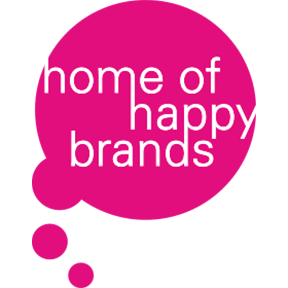
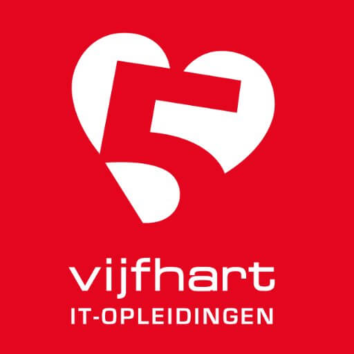

<Over mij />
Mijn naam is Damian Makkink, 23 jaar en wonend in Lochem. Sinds begin 2017 fulltime werkzaam als front-end developer in de bureauwereld.
Het grootste deel van mijn dagen spendeer ik met mijn neus in de code op veel verschillende gebieden van web ontwikkeling: van front-end programmeren (HTML, CSS/Sass, Javascript/jQuery) tot back-end programmeren (PHP, MySQL).
Ik ben fan van projecten starten, nog meer fan van projecten afmaken. Gemotiveerd en perfectionistisch. Ik streef ernaar om altijd een goed product neer te zetten, en zeker niet op het laatste moment de kantjes er vanaf te lopen. Mijn instelling is flexibel en ik ben erg leergierig. Door mijn jaren ervaring durf ik van mezelf te zeggen dat ik HBO werk- en denkniveau aantik.
In mijn vrije tijd kijk ik graag een goede serie op Netflix, drink ik een koude Radler met vrienden en maak ik video's voor mijn eigen groeiende YouTube kanaal VonoxNL.
Tools
- Visual Studio Code
- Git
- SourceTree
- Node
- PhoneGap
Programmeertalen
- HTML
- CSS/Sass/LESS
- JavaScript/ES6
- PHP
- MySQL
Frameworks
- Bootstrap
- Bulma
- Materialize
Libraries
- jQuery
- AOS
- Vivus.js
- Font Awesome
CMS
- Wordpress (met WooCommerce)
- Magento
- Tebex
CRM
- Teamleader
- HubSpot
Controlepanelen
- Plesk
- DirectAdmin
Aan het leren
- Vue
- React
Ervaring
-
Home of Happy Brands 3 jaar 3 maandenFront-end Developer feb. 2017 - heden
Bij reclamebureau Home of Happy Brands ben ik verantwoordelijk voor het technisch realiseren van ontwerpen en concepten die worden gemaakt door onze designers. Hierin is communicatie tussen designer en developer erg belangrijk, zodat de klant het meeste uit zijn of haar website kan halen. Ik werk grotendeels met Wordpress, dat wordt aangestuurd door ons eigen geschreven thema. Ook zet ik vaak landingspagina's neer waar ik verschillende technieken zoals Bootstrap, jQuery, PHPMailer en MySQL voor gebruik.
Stagiair Front-end Developer aug. 2016 - feb. 2017 -
PlayStation For The Players 1 jaar 6 maandenPresentator - Host mei. 2018 - heden
Eens in de paar weken zit ik een dag bij Sony PlayStation in de studio. Hier presenteer ik samen met twee anderen een tweetal series voor het Nederlandse YouTube kanaal van PlayStation, For The Players. In de serie For The Win nodigen wij twee bekende YouTubers uit die tegen elkaar gaan strijden in verschillende games. Aan ons de taak om het allemaal aan elkaar te praten en in goede banen te leiden. In de tweede serie, For The Gamer, brengen wij de kijkers op de hoogte van het laatste nieuws in de gaming wereld.
-
UniTracer BV 5 maandenStagiair Webdevelopment feb. 2015 - jun. 2015
Tijdens mijn opleiding aan het Graafschap College mocht ik mijn eerste stageperiode doorbrengen bij UniTracer BV in Lochem. Bij dit bedrijf was ik verantwoordelijk voor het onderhouden en uitbreiden van een Magento webshop, het bewerken van promotievideo's voor evenementen en het ontwerpen van posters/flyers.
Opleidingen
Cursussen
-
Vijfhart IT-Opleidingen KlassikaalPhoneGap Mobile App Development nov. 2018
PhoneGap is een JavaScript-bibliotheek om op basis van de webstandaarden HTML, CSS en JavaScript mobiele apps te ontwikkelen voor onder andere Android en iOS. Tijdens de cursus heb ik geleerd hoe je deze JavaScript-bibliotheek het beste kunt inzetten voor allerlei verschillende doeleinden.
Overig
TalenkennisNederlands (moedertaal), Engels (uitstekende beheersing in woord en geschrift).
RijbewijsRijbewijs B.